16 designs at a glance
Click a design to see its pictures and specifications.
 107
107 108
108 109
109 110
110 111
111 112
112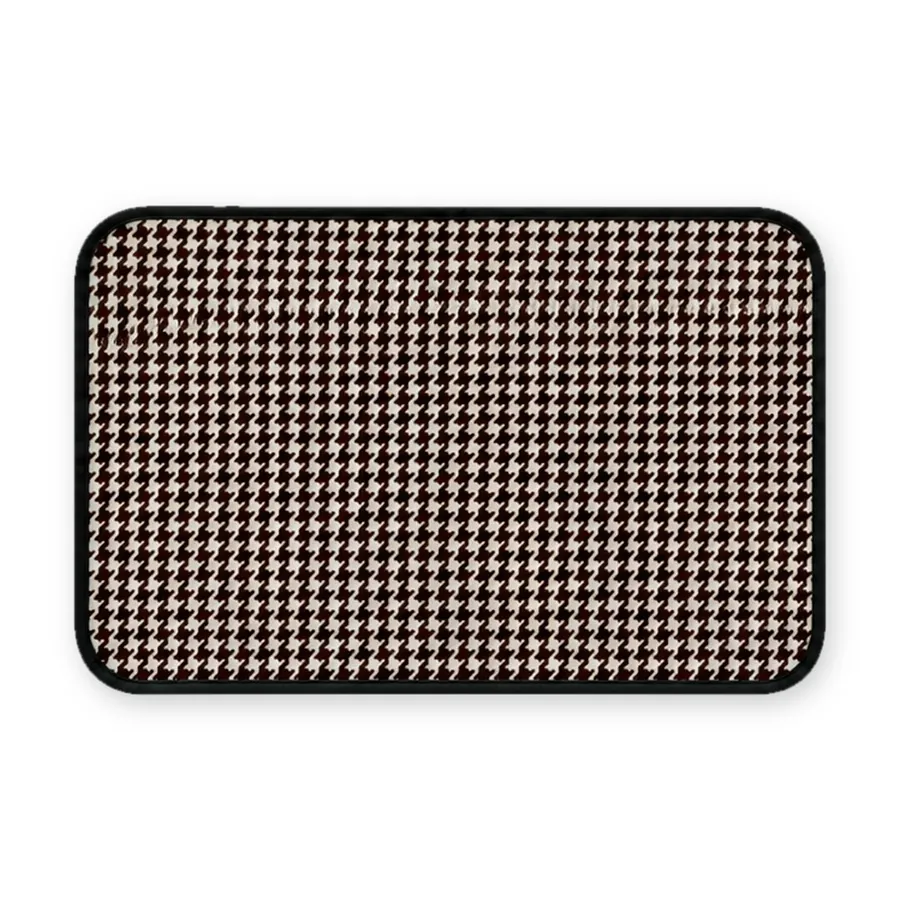
113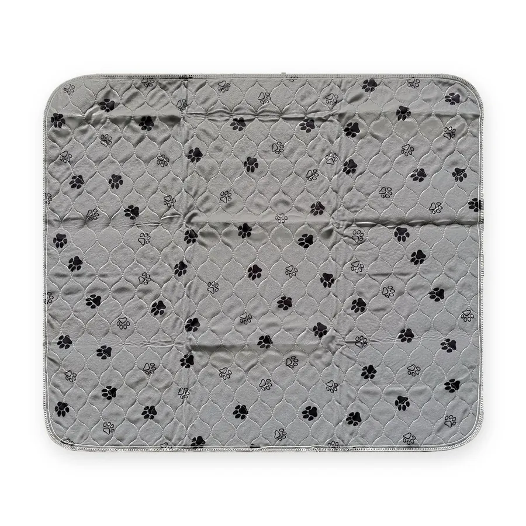
114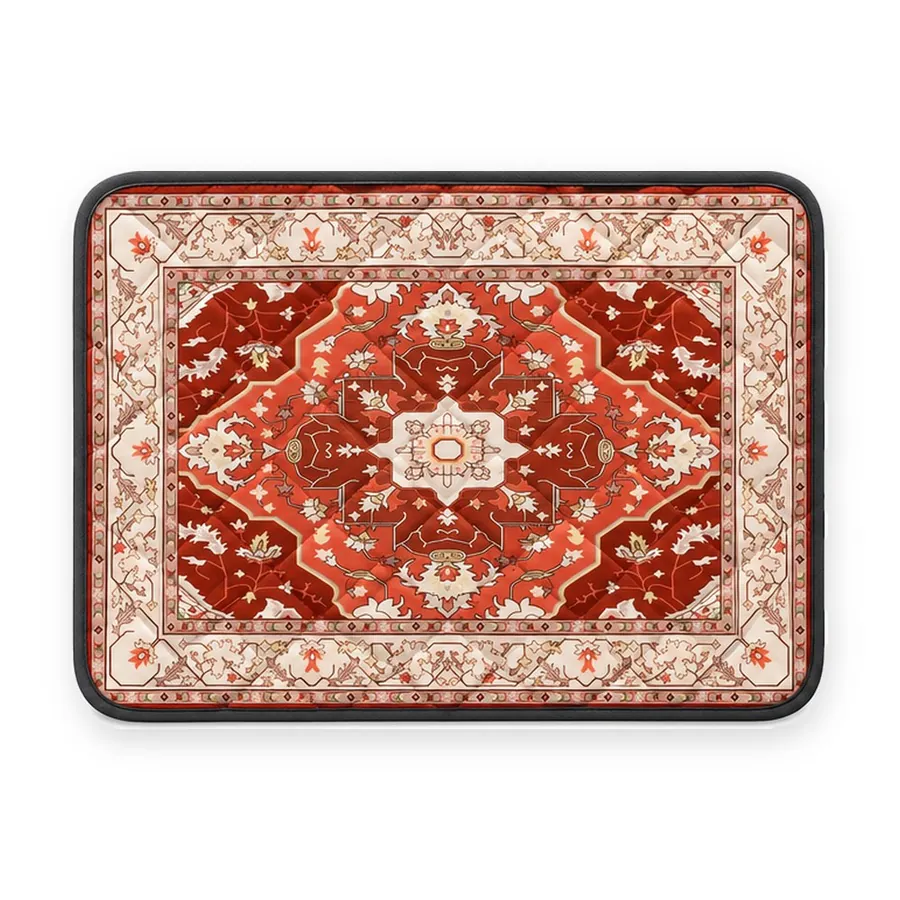
115 116
116 117
117 118
118 119
119 120
120 121
121 122
122Pads for floors, crates, sofas and beds
14 designs, 16 item numbers.
107 123
123 124
124 125
125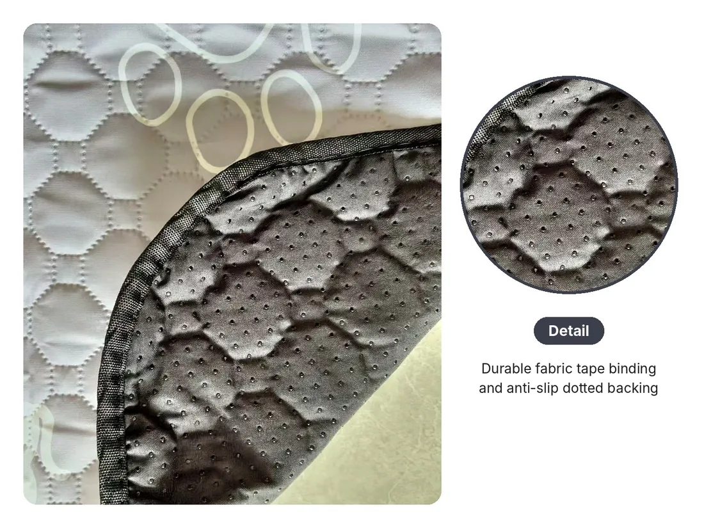
126Paw print, light grey
A square pad with a light grey paw-print top, octagon embossing and fabric tape binding. The black backing carries silicone dots so the pad stays put on tile and wood.
| Size | 23 × 23 in (58 × 58 cm) |
|---|---|
| Design | Light grey with dog, cat and paw prints |
| Top | Polyester, water-absorbing |
| Quilting | Octagon grid, ultrasonic embossing |
| Edge | Fabric tape binding |
| Backing | Polyester with silicone anti-slip dots (2 mm dots, 1 cm apart) |
| Layers | 4 · TPU waterproof film |
| Use | Puppy training, crates, floors |
108 127
127 128
128 129
129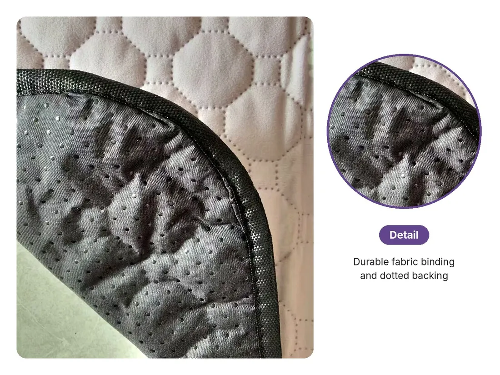
130Feather print, lilac
A compact pad with a lilac feather print and circular quilting. Small enough for carriers, crates and travel, with a dotted anti-slip backing.
| Size | 17 × 23 in (44 × 59 cm) |
|---|---|
| Design | Lilac with purple feather print |
| Top | Polyester, water-absorbing |
| Quilting | Circular quilting |
| Edge | Fabric tape binding |
| Backing | Polyester with silicone anti-slip dots (2 mm dots, 1 cm apart) |
| Layers | 4 · TPU waterproof film |
| Use | Carriers, crates, travel |
109 131
131 132
132 133
133 134
134Red stripe, scalloped edge
Red and white stripes with diamond embossing and a scalloped edge in woven tape binding. A decorative pad that still has the full 4-layer build with TPU film.
| Size | 22 × 33 in (55 × 84 cm) |
|---|---|
| Design | Red and white stripe, scalloped edge |
| Top | Polyester, water-absorbing |
| Quilting | Diamond pattern, ultrasonic embossing |
| Edge | Woven tape binding |
| Backing | Polyester with silicone anti-slip dots (2 mm dots, 1 cm apart) |
| Layers | 4 · TPU waterproof film |
| Use | Home décor, puppy training, floors |
110 135
135 136
136 137
137 138
138Mint round, scalloped edge
A round mint mat with channel stitching and a scalloped edge. The water-repellent top lets liquid bead up and wipe off; the TPU film stops anything that soaks through.
| Size | Ø 35 in (Ø 90 cm) |
|---|---|
| Design | Mint, round with scalloped edge |
| Top | Polyester, water-repellent |
| Quilting | Vertical channel stitching |
| Edge | Woven tape binding |
| Backing | Polyester with silicone anti-slip dots (2 mm dots, 1 cm apart) |
| Layers | 4 · TPU waterproof film |
| Use | Home décor, puppy training, floors |
111 139
139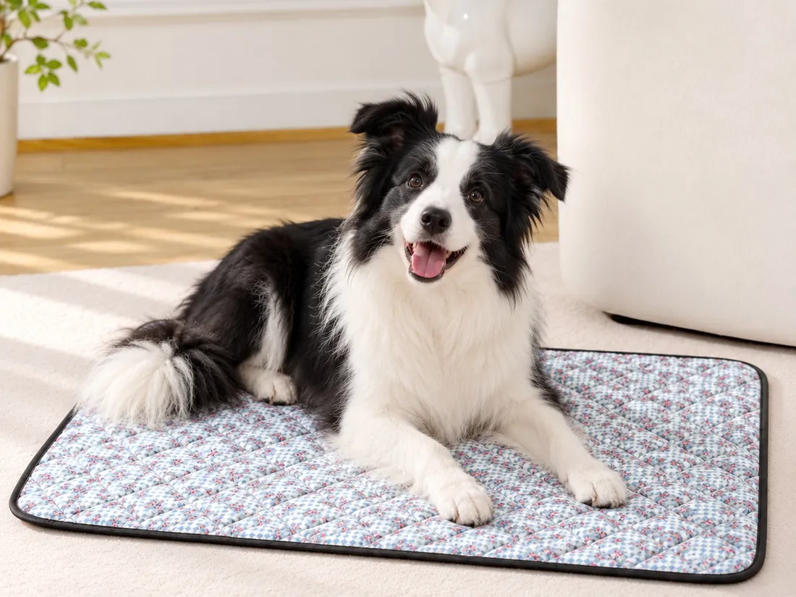
140 141
141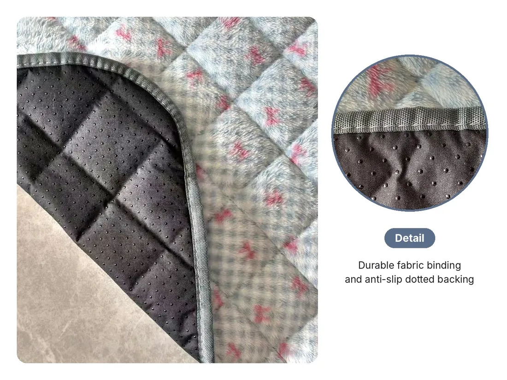
142Plaid print
A plaid pad with diamond stitch quilting and woven tape binding. The water-repellent top suits sofas and floors where spills should wipe off.
| Size | 24 × 35 in (60 × 89 cm) |
|---|---|
| Design | Plaid print |
| Top | Polyester, water-repellent |
| Quilting | Diamond stitch quilting |
| Edge | Woven tape binding |
| Backing | Polyester with silicone anti-slip dots (2 mm dots, 1 cm apart) |
| Layers | 4 · TPU waterproof film |
| Use | Crates, floors, home décor |
112 143
143 144
144 145
145 146
146Green chevron
A digitally printed green chevron top with diamond embossing and a woven tape edge. Two sizes; grey backing with silicone dots.
| Size | 512006: 28 × 20 in (71 × 51 cm) 512007: 24 × 16 in (61 × 40.6 cm) |
|---|---|
| Design | Green and white chevron, digital print |
| Top | Polyester, water-absorbing |
| Quilting | Diamond pattern, ultrasonic embossing |
| Edge | Woven tape binding |
| Backing | Polyester with silicone anti-slip dots (2 mm dots, 1 cm apart) |
| Layers | 4 · TPU waterproof film |
| Use | Floors, crates, sofas |
 147
147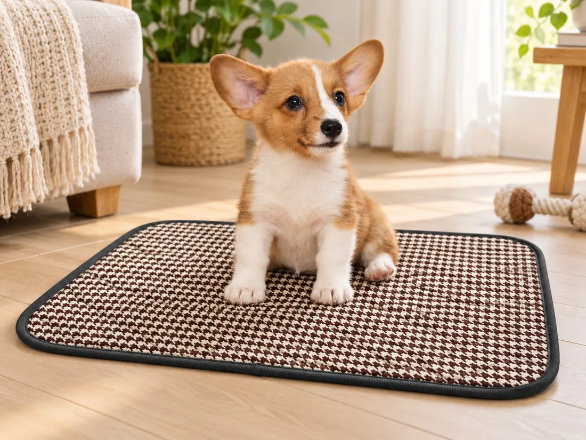
148 149
149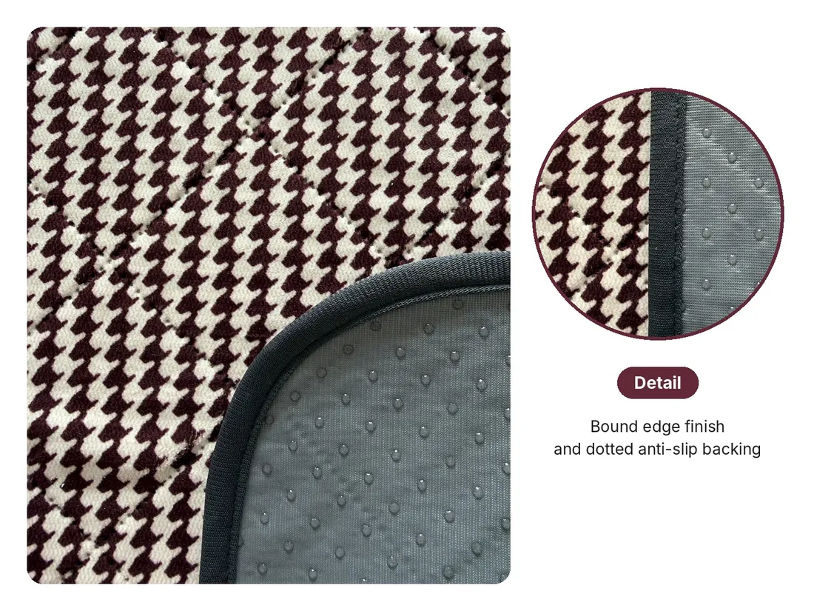
150Burgundy houndstooth
Burgundy houndstooth, digitally printed, with diamond embossing and a woven tape edge. The water-repellent top lets liquid bead up and wipe off. Two sizes.
| Size | 512008: 28 × 20 in (71 × 51 cm) 512009: 24 × 16 in (61 × 40.6 cm) |
|---|---|
| Design | Burgundy and white houndstooth, digital print |
| Top | Polyester, water-repellent |
| Quilting | Diamond pattern, ultrasonic embossing |
| Edge | Woven tape binding |
| Backing | Polyester with silicone anti-slip dots (2 mm dots, 1 cm apart) |
| Layers | 4 · TPU waterproof film |
| Use | Floors, crates, sofas |
 151
151 152
152 153
153 154
154Grey paw print
A grey paw-print pad with wavy diamond quilting and an overlocked edge. The backing has paw-shaped silicone grips for hard floors.
| Size | 36 × 31 in (90 × 80 cm) |
|---|---|
| Design | Grey with dark paw prints |
| Top | Polyester, water-absorbing |
| Quilting | Wavy diamond quilting |
| Edge | Overlocked edge |
| Backing | Polyester with silicone paw-print anti-slip |
| Layers | 4 · TPU waterproof film |
| Use | Floors, crates, sofas |
 155
155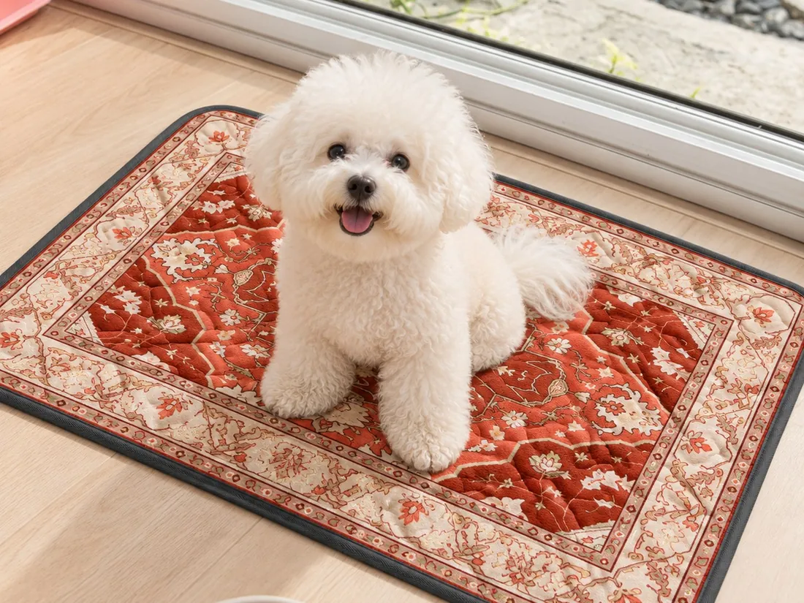
156 157
157 158
158Persian rug print, red
A red and cream Persian rug print that looks like a small rug, with diamond embossing and a bound edge. Grey dotted anti-slip backing.
| Size | 24 × 19 in (62 × 47 cm) |
|---|---|
| Design | Red and cream Persian rug print |
| Top | Polyester, water-absorbing |
| Quilting | Diamond pattern, ultrasonic embossing |
| Edge | Bound edge |
| Backing | Polyester with silicone anti-slip dots (2 mm dots, 1 cm apart) |
| Layers | 4 · TPU waterproof film |
| Use | Crates, beds, floors |
116 159
159 160
160 161
161 162
162Grey plush
A large pad with a soft grey plush top and a bound edge, for dogs that like to lie on it as a bed. Dark grey dotted anti-slip backing.
| Size | 39 × 28 in (100 × 71 cm) |
|---|---|
| Design | Grey plush |
| Top | Polyester plush, water-absorbing |
| Quilting | No quilting |
| Edge | Bound edge |
| Backing | Polyester with silicone anti-slip dots (2 mm dots, 1 cm apart) |
| Layers | 4 · TPU waterproof film |
| Use | Crates, beds, floors |
117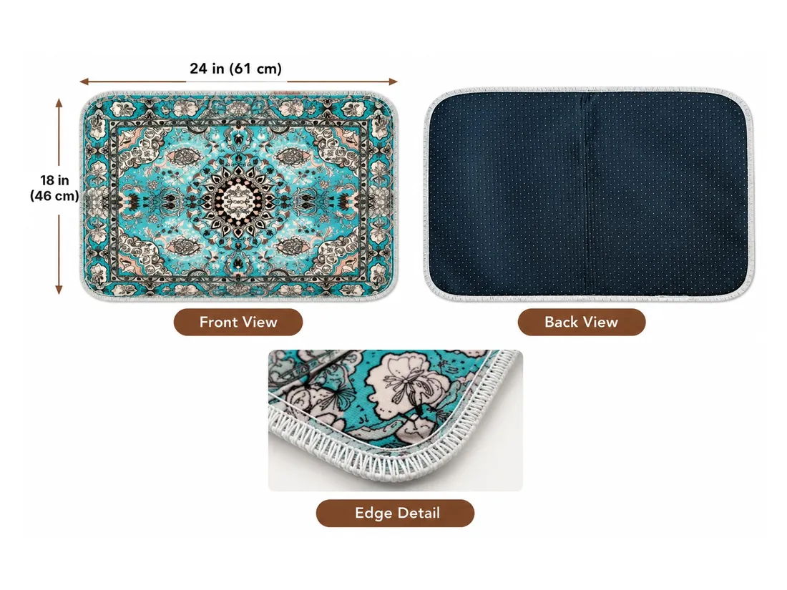
163 164
164 165
165 166
166Turquoise medallion
A turquoise medallion rug print with diamond embossing and a white overlocked edge. Dark dotted anti-slip backing.
| Size | 24 × 18 in (61 × 46 cm) |
|---|---|
| Design | Turquoise medallion rug print |
| Top | Polyester, water-absorbing |
| Quilting | Diamond pattern, ultrasonic embossing |
| Edge | Overlocked edge |
| Backing | Polyester with silicone anti-slip dots (2 mm dots, 1 cm apart) |
| Layers | 4 · TPU waterproof film |
| Use | Crates, beds, floors |
118 167
167 168
168 169
169 170
170Blue vintage rug
A vintage rug print in blue, cream and soft yellow, with diamond embossing and a grey bound edge. Dark grey dotted anti-slip backing.
| Size | 36 × 24 in (92.5 × 62.5 cm) |
|---|---|
| Design | Blue, cream and yellow vintage rug print |
| Top | Polyester, water-absorbing |
| Quilting | Diamond pattern, ultrasonic embossing |
| Edge | Bound edge |
| Backing | Polyester with silicone anti-slip dots (2 mm dots, 1 cm apart) |
| Layers | 4 · TPU waterproof film |
| Use | Crates, beds, floors |
119 171
171 106
106Botanical print
Teal and golden flowers on cream, with diamond quilting and a grey bound edge. Sized for sofas and large beds.
| Size | 30 × 40 in (75 × 102 cm) |
|---|---|
| Design | Teal and golden flowers on cream |
| Top | Polyester, water-absorbing |
| Quilting | Diamond stitch quilting |
| Edge | Bound edge |
| Backing | Polyester with silicone anti-slip dots (2 mm dots, 1 cm apart) |
| Layers | 4 · TPU waterproof film |
| Use | Sofas, beds, crates, floors |
120 172
172 173
173 174
174Yellow stripe with ties
Yellow and cream stripes with octagon quilting and a black bound edge. Six fabric ties hold it to a sofa, bed, crate or car seat; paw-print silicone grips on the back.
| Size | 42 × 28 in (106 × 72 cm) |
|---|---|
| Design | Yellow and cream stripe |
| Top | Polyester, water-absorbing |
| Quilting | Octagon quilting |
| Edge | Bound edge, black |
| Backing | Polyester with silicone paw-print anti-slip |
| Ties | 6 fabric ties (4 corners, 2 sides) |
| Layers | 4 · TPU waterproof film |
| Use | Sofas, beds, crates, car seats |
Cage mats for hamsters and guinea pigs
121 175
175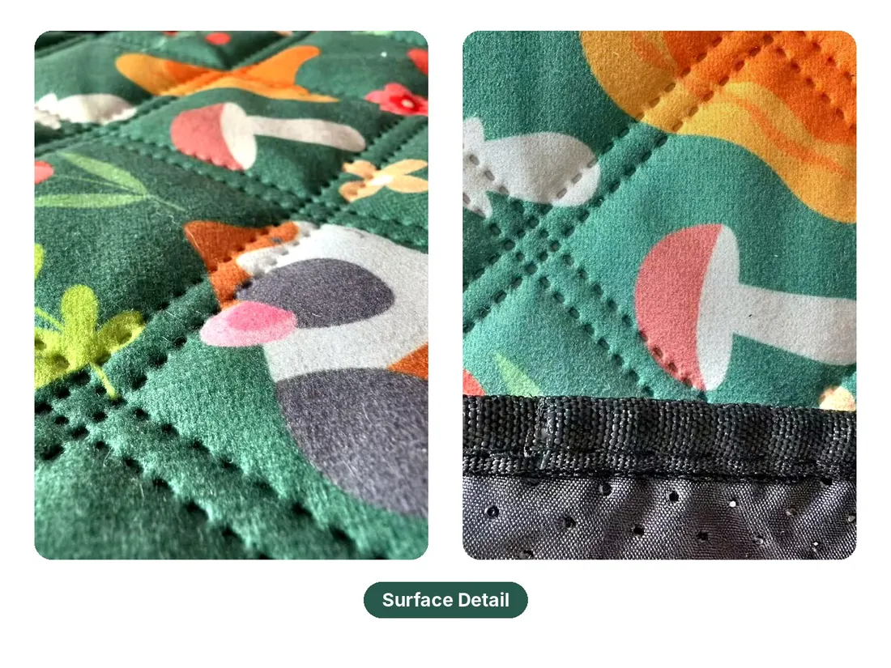
176 177
177Cage mat, mushroom print
A washable cage liner for hamsters, guinea pigs and other small pets: printed top, absorbent core and anti-slip dots, so cleaning the cage is a quick swap.
| Size | 12 × 12 in (31 × 31 cm) |
|---|---|
| Design | Dark green with mushroom print |
| Top | Polyester, water-absorbing |
| Quilting | Diamond pattern, ultrasonic embossing |
| Edge | Fabric tape binding |
| Backing | Polyester with silicone anti-slip dots (2 mm dots, 1 cm apart) |
| Layers | 4 · TPU waterproof film |
| Use | Hamster, guinea pig and small animal cages |
122 178
178 179
179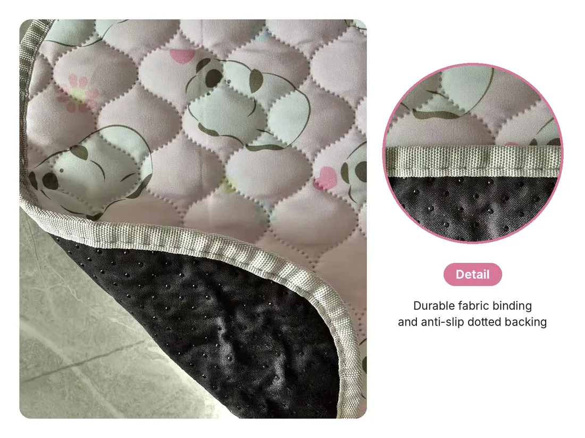
180Cage mat, heart print
A small light pink cage mat with a heart print, absorbent core and dotted anti-slip backing.
| Size | 11 × 11 in (29 × 29 cm) |
|---|---|
| Design | Light pink with heart print |
| Top | Polyester, water-absorbing |
| Quilting | No quilting |
| Edge | Fabric tape binding |
| Backing | Polyester with silicone anti-slip dots (2 mm dots, 1 cm apart) |
| Layers | 4 · TPU waterproof film |
| Use | Hamster, guinea pig and small animal cages |
What is inside every 512 pad
 181
181One 4-layer build behind every design
Only the top fabric, quilting, edge and size change from design to design. The layers underneath stay the same.
| 1 · Top | Polyester: water-absorbing, water-repellent or plush |
|---|---|
| 2 · Absorbent core | Needle-punched nonwoven, polyester/viscose |
| 3 · Waterproof layer | TPU film |
| 4 · Backing | Polyester with silicone anti-slip dots or paw prints |
| Care | Machine washable and reusable |
 182
182 183
183Two kinds of top
Water-absorbing tops pull liquid down into the core at once: the choice for puppy training and crates. Water-repellent tops let liquid bead up so it can be wiped off: the choice for sofas, beds and décor pads. In both, the TPU film keeps the floor or furniture dry.
Your version of the 512 range
106Start from any design, change what you need
Every design above can be made in your size, fabric weight, absorbency, colour or print, with a different edge, quilting or anti-slip pattern, your logo and your packaging.
| Can be changed | Size, materials, fabric weight, absorbency, colour, print, edge, quilting, anti-slip pattern, logo |
|---|---|
| Packaging | Custom care labels and colour insert cards; retail or bulk packing |
| Item numbers | A new combination gets its own 512 number |
Planning a pet pad line?
Send the item numbers you like, your sizes and quantities. We reply with prices and lead time within one business day.